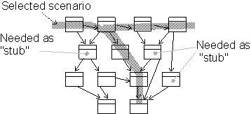

Roles and Activities >
Developer Role Set >
Roles and Activities >
Developer Role Set >
 Integrator >
Integrator >
 Plan Subsystem Integration
Plan Subsystem Integration
Roles and Activities >
Developer Role Set >
Integrator >
Plan Subsystem Integration
Activity:
| ||||||||||||
Purpose
|
|
| Steps | |
| Input Artifacts: | Resulting Artifacts: |
| Role: Integrator | |
| Workflow Details: |
The primary input is the integration build plan that specifies what should be delivered to system integration and when.
Study the use cases and scenarios that have been selected for the current iteration. Select one, or several scenarios, that will be the goal for each increment of the integration. It may be necessary to select only a part of a scenario that concerns this subsystem.
Capture the plan to integrate the subsystem, either in the project's Integration Build Plan, or in an integration build plan local to the subsystem.
Identify the classes that participate in the selected scenarios. Each scenario is described in a use-case realization's sequence diagrams, collaboration diagrams, or class diagrams. Identify which classes you need to implement, and which classes have already been implemented. Also identify the classes that do not participate in the scenario, but are needed as stubs.

Classes are identified from use-case realizations.
Identify which other implementation subsystems are needed for this build. Decide which version of each subsystem to use. Update import dependencies for this subsystem to the correct versions of the other subsystems.
If new system baselines have recently been promoted, the integrator will also have to decide when to update (rebaseline) the subsystem integration workspace. This decision is based on where in the development cycle you are. If your subsystem development is unstable in some critical area, then you may decide to postpone rebaselining.
When it is late in the project, and close to a release (whether internal or
external), it is crucial that subsystems have consistent import sets. Then there
is a greater urgency to stay current with the system baselines.
|
Rational Unified
Process
|